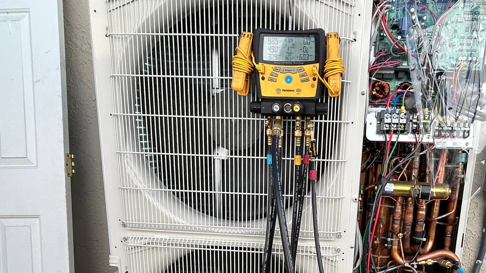
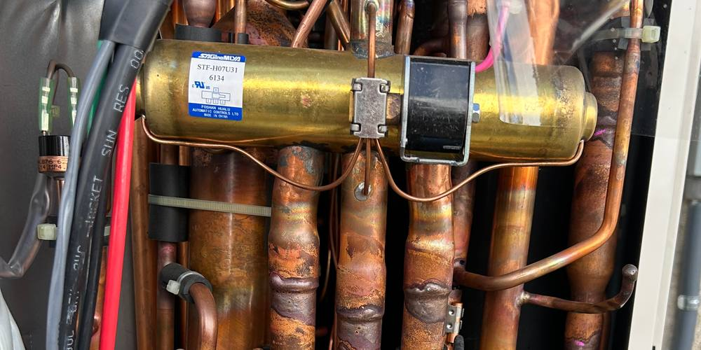

Diamond System Intelligence
Photo in. Submittal out.
A Claude skill that turns a phone photo of a filled-out Mitsubishi Field Survey Checklist into a finished Diamond System Builder project: a saved .dsbx and an exported PDF submittal, sent back to the contractor's phone.

One page, filled out at the kitchen table. One photo, dropped in the chat. A submittal that used to wait for a laptop back at the shop. Twenty to thirty minutes saved on every one.
How it works
The form is the spec. The skill builds exactly what is on it and stops if anything is missing.
-
1
Fill out the checklist and take a photo.
Two pages, five sections: project info, the outdoor unit, the branch box, the output you want, and up to eight indoor units with their controllers. Snap it with your phone and drop it in the chat with build the DSB.
-
2
The skill checks the form, then drives DSB.
Every required field, contradiction-free. If anything is blank or unreadable it tells you exactly what to fix instead of guessing.
Then it opens Diamond System Builder on a Windows machine through Claude's computer-use and works through it the way you would: project properties, outdoor unit, branch box, every indoor unit, every controller. The R-454B floor-area gate, M-NET defaults, branch box end caps and per-zone controller routing are handled on the way.
-
3
A .dsbx and a PDF come back.
The project is saved and the PDF submittal exported to the folder the form specifies. The PDF is attached back to the chat, so the contractor opens it on their phone.
If DSB reports a design error, the skill stops, names the conflict and waits for a corrected form. Design choices stay with the tech.

What it handles
Current-generation Mitsubishi residential and light commercial equipment, up to eight indoor units, with the controller logic that is easy to miss when a submittal is rushed.
- Equipment
- M-Series single zone, MXZ multi-zone, MXZ-SM Smart Multi and P-Series. Current-generation R-454B models.
- Indoor units
- Up to eight per project: zone, type, capacity, mount height, lineset, number of 90s, vertical rise or drop, floor area and controller for each.
- Branch boxes
- Three-port and five-port, with the run from the outdoor unit, the elbows and the elevation taken from the form. End caps handled.
- Controllers
- PAR-42 wired, MHK2 wireless, kumo cloud, and PAC-445 with a third-party thermostat, routed per zone.
- Validation
- Every required field checked and contradictions flagged before DSB opens. Blank or unreadable means you are told what to fix.
- Output
- A saved .dsbx project and an exported PDF submittal in the folder the form names, with the PDF attached back to the chat.
- Runs in
- Claude Code, Cowork in the Claude desktop app, or any Claude product that supports the SKILL.md format.
- Needs
- A Windows machine with Diamond System Builder installed, and Claude with computer-use access to DSB and File Explorer.
- Does not
- Redesign systems, bypass M-NET, or handle City Multi. City Multi jobs use a different survey sheet.
- License
- MIT. Use it, fork it, improve it.
The Field Survey Checklist
Two pages, five sections. Everything DSB needs, in the order DSB asks for it.
| § | Section | Fields |
|---|---|---|
| 1 | Project info | Project name, which becomes the save filename; customer; address; date; tech; job number. |
| 2 | Outdoor unit | Family, capacity in kBTU, Hyper-Heat, voltage, phase, elevation, mount, service clearance. |
| 3 | Branch box | No-branch-box checkbox, ports, run from outdoor unit to branch box, number of 90s, elevation. |
| 4 | Output | Save filename and folder, plus checkboxes for the equipment schedule, lineset summary, PDF and email. |
| 5 | Indoor units | Up to eight: zone or room, type, capacity, mount height, lineset, number of 90s, vertical rise or drop, floor area, controller. |
One file. Runs wherever Claude runs skills.
DSB Builder is a single SKILL.md with YAML frontmatter. Nothing to compile, nothing to host.
- Claude Code
- Drop SKILL.md into
~/.claude/skills/dsb-builder/or a project-levelskills/folder. - Cowork
- Install it as a personal or workspace skill in the Claude desktop app.
- Then
- Upload the photo and say build the DSB, spin up DSB, run the submittal or do the worksheet.
NovaCTRL
Open-sourced AI × HVACR workflows.
NovaCTRL publishes open-sourced AI workflows for HVACR, built and run on real jobs. Diamond System Intelligence is the first one here.
Built for technicians, by technicians.